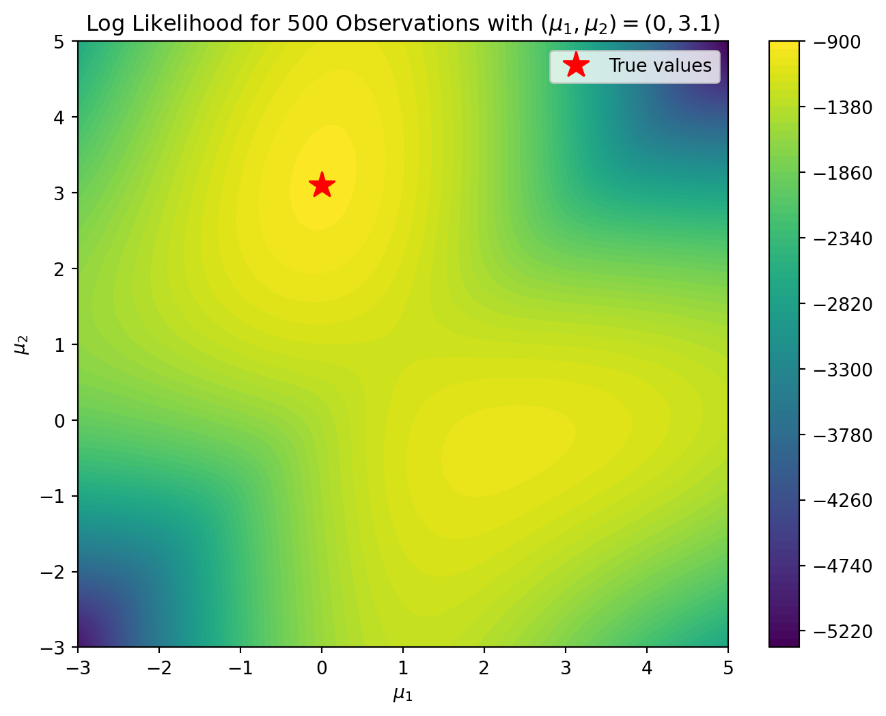
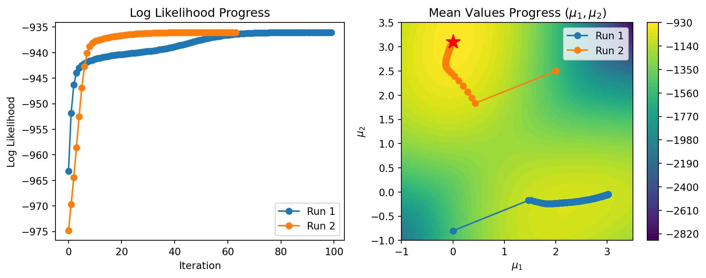

$$
%%% 演算子
%%% 線型代数学%%% 複素解析学 %%% 集合と位相
%%% 形式言語理論 %%% Graph Theory
%%% 多様体 %%% 代数 %%% 代数的位相幾何学 %%% 微分幾何学 %%% 函数解析 %%% 積分論%%% Fourier解析 %%% 数値解析
%%% 確率論%%% 情報理論 %%% 量子論 %%% 最適化 %%% 数理ファイナンス
%%% 偏微分方程式 %%% 常微分方程式 %%% 統計力学 %%% 解析力学
%%% 統計的因果推論 %%% 応用統計学 %%% 数理統計%%% 計量経済学
%%% 無限次元統計模型の理論%%% Banach Lattices
%%% 圏 %代数の圏 %Metric space & Contraction maps %確率空間とMarkov核の圏 %Sober space & continuous map %Category of open subsets %Category of sheave %Category of presheave, PSh(C)=[C^op,set]のこと %Convergence spaceの圏 %一様空間と一様連続写像の圏 %フレームとフレームの射 %その反対圏 %滑らかな多様体の圏 %Quiverの圏
%%% SMC %%% 括弧類%%% 予約語
%%% 略記
%%% 矢印類 $$
1 最尤推定
クラスタリングを一度さっぱり忘れて，最尤推定を思い出してみる．
1.1 最尤推定と最適化
すなわち，最尤推定量とは最適化問題の解として定式化されるのである．
最大値点であるということは，停留点である必要があるから，微分が零になるという条件を通じて解析的に求まることもある．この \(Z\)-推定量としての特徴付けは (Carmer, 1946, p. 498) による．
また，計算機的な方法では，Iterative Propertional Fittting や勾配に基づく最適化手法を用いることも考えられる (Robbins & Monro, 1951), (Fletcher, 1987)．
最尤推定量が解析的に求まらない場面には，代表的には欠測モデルなどがある．欠測モデルは，観測される確率変数 \(X\) の他に，観測されない確率変数 \(Z\) も想定し，その同時分布を考えるモデルである．これにより，\((X,Z)\) 全体には単純な仮定しか置かずとも，\(X\) に対して複雑な分布を想定することが可能になるのである．
この場合には，モデルの構造を利用して最尤推定量を求めるための MM アルゴリズム (Sun et al., 2016) の例がある．これが EM アルゴリズム (Dempster et al., 1977) である．
現在でも，その他の MM アルゴリズムが，種々の最適化問題に対する “problem-driven algorithm” であり続けている (T. T. Wu & Lange, 2010)．
1.2 最尤推定と Bayes 推定
最尤推定は，一様事前分布をおいた場合の MAP 推定 とみなせる．この意味で，Bayes 推定の特殊な場合である．
Bayes 推定は MCMC や SMC などのサンプリング法によって統一的に行えるが，殊に MAP 推定に対しては，効率的な最適化法として EM アルゴリズムが使える，ということである．
より一般の Bayes 推定に対応できるような EM アルゴリズムの一般化が，近似アルゴリズムとして存在する．これが次稿で紹介する 変分推論 である．
2 EM アルゴリズム
EM アルゴリズムは，混合モデルに対する最尤推定アルゴリズムである．一般に，目的関数が \[ h(x)=\operatorname{E}[H(x,Z)] \] と表せる場合に対する特殊な MM アルゴリズムである．2
2.1 欠測データと混合モデル
欠測データ (incomplete data) とは，２つの確率変数 \((Z,X)\) について次の図式が成り立つ際の，\(Z\) を潜在変数として，\(X\) からの観測とみなせるデータをいう (Dempster et al., 1977, p. 1)：

これは， \[ p(x|\theta)=\int_{\mathcal{Z}}p(x,z|\theta)\,dz \tag{1}\] という形の尤度を持つモデルである．3
これは潜在変数 \(Z\) を持つモデルの最も単純な例ともみなせる．特に \(Z\) が離散変数である場合，\(X\) に対する混合モデルともいう．隠れ Markov モデル はこの発展例である．4
このように，\(X\) の分布を，潜在変数 \(Z\) を追加して理解することを，モデルの 完備化 (completion) または 脱周辺化 (demarginalization)，またはデータの拡張 (data augmentation) ともいう．5
2.2 EM アルゴリズム
値域 \(\mathcal{Z}\) を持つ潜在変数 \(Z\) とパラメータ \(\theta\in\Theta\) に関して 式 1 で表せる尤度関数 \(p(x|\theta)\) に関して，Jensen の不等式より，任意の \(x,\theta\) で添字づけられた確率密度関数 \(q:\mathcal{Z}\to\mathbb{R}_+\)6 とパラメータ \(\theta\in\Theta\) について次の評価が成り立つ：
\[ \begin{align*} \log p(x|\theta)&=\log\int_{\mathcal{Z}}p(x,z|\theta)\,dz\\ &\ge\int_\mathcal{Z}q(z|x,\varphi)\log\frac{p(x,z|\theta)}{q(z|x,\varphi)}\,dz\\ &=:F(q,\theta). \end{align*} \tag{2}\]
この事実に基づき，\(F\) を代理関数として，これを２つの変数 \(q,\theta\) について交互に最大化するという手続きを，EM アルゴリズム という．7
- \(E\)-ステップ：\(F\) を \(q\) について最大化する． \[ \begin{align*} F(q,\theta)&=\int_\mathcal{Z}q(z|x,\varphi)\log\frac{p(z|x,\theta)p(x|\theta)}{q(z|x,\varphi)}\,dz\\ &=\log p(x|\theta)-\mathop{\mathrm{KL}}(q_\varphi,p_\theta). \end{align*} \] より，\(q(z|x,\varphi)=p(z|x,\theta)\) で最大化される．8
- \(M\)-ステップ：\(F\) を \(\theta\) について最大化する． \[ \begin{align*} F(q,\theta)&=\int_{\mathcal{Z}}q(z|x,\varphi)\log p(x,z|\theta)\,dz\\ &\qquad-\int_\mathcal{Z}q(z|x,\varphi)\log q(z|x,\varphi)\,dz\\ &=\underbrace{(q_\varphi dz\,|\log p_\theta)}_{=:Q(\theta|\varphi,x)}+H(q_\varphi) \end{align*} \] より，\(Q\) の停留点で最大化される．
総じて，EM アルゴリズムは \(p,q\) の KL 乖離度を逐次的に最小化している．
2.3 \(E\)-ステップの変形
\(M\)-ステップにおける \(F\) の \(\theta\) における最大化は \(Q\) の \(\theta\) による最大化に等価であるから，\(E\)-ステップは結局，事後分布 \(p(z|x,\theta)\) を計算し，これに関する積分である \[ Q(\theta|\varphi,x)=\int_\mathcal{Z}p(z|x,\theta)\log p(x,z|\theta)\,dz \] を計算する，というステップになる．
モデル \(\{p_\theta\}\) を複雑にしすぎた場合，この \(Q\) の計算は困難で実行不可能になってしまう．解析的に \(E\)-ステップを実行したい場合，典型的には指数型分布族を仮定する．
そこで，\(Q\) を Monte Carlo 推定量で代替して，それを最大化した場合の EM アルゴリズムを MCEM (Monte Carlo EM) という (Wei & Tanner, 1990a), (Wei & Tanner, 1990b)．
また，この \(E\)-ステップで必ずしも完全な最大化を達成する必要はない (Neal & Hinton, 1998), (Bishop, 2006, p. 454)．従って，\(p(z|x,\theta)\) が複雑すぎる場合，十分近い \(q\) を選択してこれに関する積分として \(Q\) を近似することが考えられる．特に \(p\) を 変分近似 した場合，変分 EM アルゴリズムという (Wainwright & Jordan, 2008, p. 154)．
2.4 \(M\)-ステップの変形
\(Q\) の停留点を探すにあたって，典型的には微分が消える点を探す．
しかしこれが難しい場合，厳密な最大化は行わず，代わりにせめて「現状よりは大きくする」ことを実行するアルゴリズムを用いた場合，これを 一般化 EM アルゴリズム (GEM: Generalized EM) ともいう (Bishop, 2006, p. 454), (Hastie et al., 2009, p. 277)．
例えば，大域的最大化の代わりに条件付き最大化を行うこととする方法 ECM (Expectation Conditional Maximization) などがその例である (Meng & Rubin, 1991), (Meng & Rubin, 1993)．(Robert & Casella, 2004, p. 200) も参照．
2.5 EM アルゴリズムの有効性
よって，EM アルゴリズムは局所解には収束する．
しかし，常に尤度が単調増加するという性質上，局所解に囚われてしまった場合，そこから逃れることはないことになる．
大域解に収束することを保証したい場合は，異なる初期値で複数回 EM アルゴリズムを実行するか，擬似除冷 (simulated annealing)11 などの別の手法を用いることを考える必要がある (Finch et al., 1989)．
3 EM アルゴリズムの実装（Gauss 有限混合モデルの場合）
負担率に確率モデルを置いた場合，ソフト \(K\)-平均アルゴリズム は EM アルゴリズムになる．
EM アルゴリズムは一般に多峰性に弱いことをここで示す．12
3.1 Guass 有限混合モデル
ここでは，以下の，有限な混合モデルで，さらに混合される分布は正規であるものを考える：
式 3 は \((X,Z)\) 上の結合分布の族を表しており，そのパラメータは \(\theta:=((\mu_k),(\Sigma_k),(p_k))\) である．さらに，\(\theta_k:=(\mu_k,\Sigma_k)\) と定める．
3.2 Gauss 有限混合モデルでの EM アルゴリズム
節 2.2 での議論を，今回の Gauss 有限混合モデルに当てはめてみる．
対数周辺尤度は
\[ \begin{align*} \log p(x|\theta)&=\log\left(\sum_{k=1}^K q_k\frac{p_k\phi(x|\theta_k)}{q_k}\right)\\ &\ge\sum_{k=1}^Kq_k\log\left(\frac{p_k\phi(x|\theta_k)}{q_k}\right)\\ &=:F(q_k,\theta). \end{align*} \]
という下界を持つ．
これに基づき，観測 \(\{x^{(n)}\}_{n=1}^N\) と混合 Gauss モデル 3.1 に対する EM アルゴリズムは次の２段階を繰り返す：
- \(E\)-ステップ： \[ \begin{align*} r_k^{(n)}&\gets\operatorname{P}[Z=k|x^{(n)},\theta]\\ &=\frac{p_k\phi(x^{(n)}|\theta_k)}{\sum_{j=1}^Kp_j\phi(x^{(n)}|\theta_j)} \end{align*} \] を計算して，\(F\) に代入する．
- \(M\)-ステップ：\(F\) を \(\theta\) について最大化する．これは，次の値を計算することに等しい：
- \[ \mu_k\gets\frac{\sum_{n=1}^Nr_k^{(n)}x^{(n)}}{\sum_{n=1}^Nr_k^{(n)}} \]
- \[ \Sigma_k\gets\frac{\sum_{n=1}^Nr_{k}^{(n)}(x^{(n)}-\mu_k)(x^{(n)}-\mu_k)^\top}{\sum_{n=1}^Nr_{k}^{(n)}} \]
- \[ p_k\gets\frac{\sum_{n=1}^Nr_{k}^{(n)}}{N} \]
3.3 \(K\)-平均アルゴリズムとの対応
\(E\)-ステップが assignment ステップ，\(M\)-ステップが update ステップに対応する．
ハード \(K\)-平均法は，歪み尺度 (distortion measure) \[ J(r,\mu):=\sum_{n=1}^N\sum_{k=1}^Kr_{nk}\|x_n-\mu_k\|^2 \] を \(r,\mu\) のそれぞれについて逐次的に最小化する手法とも見れる．15
3.4 Gauss 混合モデルの場合16
\(K=2\) での Gauss 混合分布 \[ p\mathop{\mathrm{N}}(\mu_1,\sigma^2)+(1-p)\mathop{\mathrm{N}}(\mu_2,\sigma^2), \tag{4}\] \[ p=0.7,\quad\sigma=1, \] を考える．未知パラメータは \(\theta:=(\mu_1,\mu_2)\) である．
実は，混合モデルでは，ここまで単純な例でさえ，尤度は多峰性を持つ．
試しに，\((\mu_1,\mu_2)=(0,3.1)\) として 500 個のデータを生成し，モデル 4 が定める尤度をプロットしてみると，次の通りになる：
真値 \((\mu_1,\mu_2)=(0,3.1)\) で確かに最大になるが，\((\mu_1,\mu_2)=(2,-0.5)\) 付近で極大値を取っていることがわかる．
3.5 EM アルゴリズムの初期値依存性
EM アルゴリズムはその初期値依存性からランダムな初期値から複数回実行してみる必要がある．モデル 4 の場合，その結果は次のようになる：
Code
class EM_1d:
"""
Gauss 有限混合モデルに対する EM アルゴリズム
Parameters:
- K (int): 混合成分の数．デフォルトは2．
- max_iter (int): アルゴリズムの最大反復回数．デフォルトは100．
- tol (float): 収束の閾値．連続する反復での対数尤度の差がこの値以下になった場合，アルゴリズムは収束したと見なされる．デフォルトは1e-4．
"""
def __init__(self, K=2, init=None, max_iter=100, tol=1e-4):
self.K = K
self.max_iter = max_iter
self.tol = tol
self.means = None
self.variances = None
self.mixing_coefficients = None
self.log_likelihood_history = []
self.mean_history = []
self.initial_value = init
def expectation(self, X):
"""
E ステップ
Parameters:
- X (ndarray): 観測データ．
"""
N = X.shape[0]
r = np.zeros((N, self.K))
for k in range(self.K):
pdf = norm.pdf(X, self.means[k], np.sqrt(self.variances[k]))
r[:, k] = self.mixing_coefficients[k] * pdf
r /= r.sum(axis=1, keepdims=True)
return r
def maximization(self, X, r):
"""
M ステップ
Parameters:
- X (ndarray): 観測データ．
- r (ndarray): 負担率．
"""
N = X.shape[0]
Nk = r.sum(axis=0)
self.means = (X.T @ r / Nk).T
self.variances = np.zeros(self.K)
for k in range(self.K):
diff = X - self.means[k]
self.variances[k] = (r[:, k] @ (diff ** 2)) / Nk[k]
self.mixing_coefficients = Nk / N
def compute_log_likelihood(self, X):
"""
対数尤度の計算
Parameters:
- X (ndarray): 観測データ．
"""
log_likelihood = 0
for x in X:
log_likelihood += np.log(np.sum([self.mixing_coefficients[k] * norm.pdf(x, self.means[k], np.sqrt(self.variances[k])) for k in range(self.K)]))
return log_likelihood
def fit(self, X):
"""
EM アルゴリズムの実行
Parameters:
- X (ndarray): 観測データ．
"""
N = X.shape[0]
np.random.seed(42)
if self.initial_value is None:
random_indeces = np.random.choice(N, self.K, replace=False)
self.initial_value = X[random_indeces]
self.means = self.initial_value
self.initial_value = self.means
self.variances = np.ones(self.K)
self.mixing_coefficients = np.ones(self.K) / self.K
# 反復
for _ in range(self.max_iter):
r = self.expectation(X)
self.maximization(X, r)
log_likelihood = self.compute_log_likelihood(X)
self.log_likelihood_history.append(log_likelihood)
self.mean_history.append(self.means)
if len(self.log_likelihood_history) >= 2 and np.abs(self.log_likelihood_history[-1] - self.log_likelihood_history[-2]) < self.tol:
break
return self
4 Monte Carlo 法による解決
式 1 の逆向きの関係 \[ \begin{align*} p(\theta|x)&=\int_\mathcal{Z}p(z,\theta|x)\,dz\\ &=\int_\mathcal{Z}p(\theta|z,x)p(z|x)\,dz \end{align*} \] も成り立つという 階層構造 (hierarchical structure) を持つモデルにおいて，Bayes 推論が Gibbs サンプラーによって実行できる (Robert, 1996)．17
このような欠測モデルの文脈で Gibbs サンプラーを用いる手法は，データ拡張 の名前でも知られる (Tanner & Wong, 1987)．
加えて，初期値依存性や局所解へのトラップが懸念されるという EM アルゴリズムの問題点を，MCMC はいずれも持ち合わせていない．
さらに，混合数 \(K\) に関する検定も構成できる (Mengersen & Robert, 1996) など，Gibbs サンプラーひとつで確率モデルに関する種々の情報を取り出せる．
最尤推定の代わりに Bayes 推定を行なっているため，データ数が少なくとも，過学習の問題が起こりにくいという利点もある．
Bayes 階層モデルは複雑なモデルに対する表現力が高く，地球科学をはじめとして多くの応用分野で使われている (Hrafnkelsson, 2023)．
4.1 Gibbs サンプリング
高次元な確率変数 \((U_1,\cdots,U_K)\) のシミュレーションを行いたい場合，直接行うのではなく，条件付き分布 \(p(u_k|u_{-k})\) からのサンプリングを繰り返すことでこれを行うことが出来る．18
- 任意の初期値 \(U_1^{(0)},\cdots,U_K^{(0)}\) を与える．
- 各 \(k\in[K]\) について， \[ U_k^{(t)}\sim p(u_k|U_{-k}^{(t-1)}) \] をサンプリングする．
- 十分時間が経過した際，アルゴリズムの出力 \((U^{(t)}_1,\cdots,U^{(t)}_K)\) は \((U_1,\cdots,U_K)\) と同分布になる．
実際，\(\{(U_1^{(t)},\cdots,U_K^{(t)})\}_{t\in\mathbb{N}}\) はエルゴード的な Markov 連鎖を定め，定常分布 \(p(U_1,\cdots,U_K)\) を持つ．
4.2 確率的 EM アルゴリズム
Gibbs サンプリングアルゴリズムは，EM アルゴリズム2.2の変形とみなせる：
- \(E\)-ステップ：EM アルゴリズムでは \[ Q(\theta|\vartheta,x):=(p_\vartheta dz\,|\log p_\theta) \] を評価するところであったが，Gibbs サンプリングでは，\(p(z|x,\vartheta)\) のサンプリングを行う．
- \(M\)-ステップ：EM アルゴリズムでは \[ \mathop{\mathrm{arg\,max}}_{\vartheta\in\Theta}Q(\vartheta|\theta,x)=(p_\theta dz\,|\log p_\vartheta) \] を求めるところであったが，Gibbs サンプリングでは，\(p(\theta|z,x)\) のサンプリングを行う．
これは \(E\)-ステップでの \(Q\) 関数の評価が困難であるとき，\(p(z|x,\theta)\) からのサンプリングでこれを回避できるという美点もある．
4.2.1 EM アルゴリズムへの部分的な適用：\(E\)-ステップ
またこの美点のみを用いて，\(p(z|x,\theta)\) からサンプリングをして \(Q\) の Monte Carlo 推定量 \[ Q(\theta)=\frac{1}{M}\sum_{m=1}^M\log p(x,z^{(m)}|\theta) \] を計算し，\(M\)-ステップとしてこれを最大化して \(\{\widehat{\theta}_j\}\) を得るという 確率的 EM アルゴリズム (Stochastic EM) も考えられる (Celeux & Diebolt, 1985)．20
この場合，\(\{\widehat{\theta}_j\}\) は多くの場合エルゴード的な Markov 連鎖を定めるが，これがどこに収束するかの特定が難しい (Diebolt & Ip, 1996)．
4.2.2 EM アルゴリズムへの部分的な適用：\(M\)-ステップ
Gibbs サンプリングの考え方を \(M\)-ステップにのみ導入し，\(M\)-ステップを完全に最大化するのではなく「条件付き最大化」に置き換えても，EM アルゴリズム本来の収束性は保たれる．\(\theta=(\theta_1,\theta_2)\) と分解できる際に，いずれか片方ずつのみを最大化する，などである．これを ECM (Expectation Conditional Maximization) アルゴリズムという (Meng & Rubin, 1991), (Meng & Rubin, 1993)．
\(M\)-ステップのみを確率的にすることで，EM アルゴリズムの局所解へのトラップを改善することができる．そのような手法の例に，SAME (State Augmentation for Marginal Estimation) (Doucet et al., 2002) などがある．
4.3 諸言
欠測モデル2.1のように，一般に グラフィカルモデル として知られる，局所的な関係のみから指定されるモデルや潜在変数を持つモデルでは，Gibbs サンプリングにより効率的に結合分布からサンプリングができる．
MCMC はグラフィカルモデルを用いた Bayes 推論の，強力な武器である．21
References
Bishop, C. M. (2006). Pattern recognition and machine learning. Springer New York. https://link.springer.com/book/9780387310732
Boyles, R. A. (1983). On the convergence of the EM algorithm. Journal of the Royal Statistical Society. Series B (Methodological), 45(1), 47–50. https://www.jstor.org/stable/2345622
Carmer, H. (1946). Mathematical methods of statistics. Princeton University Press.
Celeux, G., & Diebolt, J. (1985). The SEM algorithm: A probabilistic teacher algorithm derived from the EM algorithm for the mixture problem. Computational Statistics Quarterly, 2, 73–82.
Chopin, N., & Papaspiliopoulos, O. (2020). An introduction to sequential monte carlo. Springer Cham.
Dempster, A. P., Laird, N. M., & Rubin, D. B. (1977). Maximum likelihood from incomplete data via the EM algorithm. Journal of the Royal Statistical Society. Series B (Methodological), 39(1), 1–22. https://rss.onlinelibrary.wiley.com/doi/10.1111/j.2517-6161.1977.tb01600.x
Diebolt, J., & Ip, E. (1996). Markov chain monte carlo in practice (W. R. Gilks, S. Richardson, & D. Spiegelhalter, Eds.; pp. 259–274). Chapman; Hall. https://www.taylorfrancis.com/books/mono/10.1201/b14835/markov-chain-monte-carlo-practice-david-spiegelhalter-gilks-richardson
Diebolt, J., & Robert, C. P. (1994). Estimation of finite mixture distributions through bayesian sampling. Journal of the Royal Statistical Society. Series B (Methodological), 56(2), 363–375. https://www.jstor.org/stable/2345907
Doucet, A., Godsill, S. J., & Robert, C. P. (2002). Marginal maximum a posteriori estimation using markov chain monte carlo. Statistics and Computing, 12, 77–84. https://link.springer.com/article/10.1023/A:1013172322619
Finch, S. J., Mendell, N. R., & Thode Jr., H. C. (1989). Probabilistic measures of adequacy of a numerical search for a global maximum. Journal of the American Statistical Association, 84(408), 1020–1023. https://www.jstor.org/stable/2290078
Fisher, R. A. (1912). On an absolute criterion for fitting frequency curves. Messenger of Mathematics, 41, 155–160. https://www.jstor.org/stable/2246266
Fletcher, R. (1987). Practical methods of optimization (2nd ed.). John Wiley & Sons. https://onlinelibrary.wiley.com/doi/book/10.1002/9781118723203
Hastie, T., Tibshirani, R., & Friedman, J. (2009). The elements of statistical learning (2nd ed.). Springer New York.
Hrafnkelsson, B. (Ed.). (2023). Statistical modeling using bayesian latent gaussian models: With applications in geophysics and encironmental sciences. Springer Cham. https://link.springer.com/book/10.1007/978-3-031-39791-2
MacKay, D. J. C. (2003). Information theory, inference and learning algorithms. Cambridge University Press. https://www.cambridge.org/gb/universitypress/subjects/computer-science/pattern-recognition-and-machine-learning/information-theory-inference-and-learning-algorithms?format=HB&isbn=9780521642989
Meng, X.-L., & Rubin, D. B. (1991). Using EM to obtain asymptotic variance-covariance matrices: The SEM algorithm. Journal of the American Statistical Association, 86(416), 899–909. https://www.jstor.org/stable/2290503
Meng, X.-L., & Rubin, D. B. (1993). Maximum likelihood estimation via the ECM algorithm: A general framework. Biometrika, 80(2), 267–278. https://www.jstor.org/stable/2337198
Mengersen, K. L., & Robert, C. P. (1996). Testing for mixtures: A bayesian entropic approach. Bayesian Statistics 5: Proceedings of the Fifth Valencia International Meetings, 255–276. https://academic.oup.com/book/54042/chapter-abstract/422209682
Neal, R. M., & Hinton, G. E. (1998). Learning in graphical models (M. I. Jordan, Ed.; pp. 355–368). Springer Dordrecht. https://link.springer.com/chapter/10.1007/978-94-011-5014-9_12
Robbins, H., & Monro, S. (1951). A stochastic approximation method. The Annals of Mathematical Statistics, 22(3), 400–407. https://www.jstor.org/stable/2236626
Robert, C. P. (1996). Markov chain monte carlo in practice (W. R. Gilks & D. Spiegelhalter, Eds.; pp. 441–464). Chapman & Hall, London.
Robert, C. P. (2007). The bayesian choice: From decision-theoretic foundations to computational implementation (2nd ed.). Springer New York. https://link.springer.com/book/10.1007/0-387-71599-1
Robert, C. P., & Casella, G. (2004). Monte carlo statistical methods (2nd ed.). Springer New York.
Sun, Y., Babu, P., & Palomar, D. P. (2016). Majorization-minimization algorithms in signal processing, communications, and machine learning. IEEE Transactions on Signal Processing, 65(3), 794–816. https://ieeexplore.ieee.org/document/7547360
Tanner, M. A., & Wong, W. H. (1987). The calculation of posterior distributions by data augmentation. Journal of the American Statistical Association, 82(398). https://www.jstor.org/stable/2289457
Wainwright, M. J., & Jordan, M. I. (2008). Graphical models, exponential families, and variational inference. Foundations and Trends in Machine Learning, 1(1-2), 1–305. https://www.nowpublishers.com/article/Details/MAL-001
Wei, G. C. G., & Tanner, M. A. (1990a). A monte carlo implementation of the EM algorithm and the poor man’s data augmentation algorithm. Journal of the American Statistical Association, 85(411), 699–704. https://www.jstor.org/stable/2290005
Wei, G. C. G., & Tanner, M. A. (1990b). Posterior computations for censored regression data. Journal of the American Statistical Association, 85(411), 829–839. https://www.jstor.org/stable/2290022
Wu, C. F. J. (1983). On the convergence properties of the EM algorithm. The Annals of Statistics, 11(1), 95–103. https://www.jstor.org/stable/2240463
Wu, T. T., & Lange, K. (2010). The MM alternative to EM. Statistical Science, 25(4), 492–505. https://www.jstor.org/stable/23061097
甘利俊一. (1989). 神経回路網モデルとコネクショニズム (Vol. 22). 東京大学出版会. https://www.utp.or.jp/book/b305707.html
鎌谷研吾. (2020). モンテカルロ統計計算. 講談社.
Footnotes
(Carmer, 1946, p. 498) によると，(Fisher, 1912) が初出であるが，以前に Gauss がその特別な形を用いていた．また，(Carmer, 1946, p. 499) での定義はこことは違い，尤度関数の停留点（＝尤度方程式の解）と定義している．↩︎
(Robert & Casella, 2004, p. 174) 式(5.8)．↩︎
(Robert & Casella, 2004, p. 174) 式(5.7)．\(p\) を完備化された尤度 (completed likelihood) ともいう．\(X\) を incomplete data, \((X,Z)\) を complete data ともいう (Bishop, 2006, pp. 433, p.440)．↩︎
特に，隠れ Markov モデルの文脈では，EM アルゴリズムは Baum-Welch アルゴリズム とも呼ばれる (Chopin & Papaspiliopoulos, 2020, p. 70)．↩︎
それぞれ，(Robert, 2007, p. 330)，(Robert & Casella, 2004, p. 176)，(Hastie et al., 2009, p. 276)，↩︎
正確には確率核 \(Q:\mathcal{X}\times\Theta\to\mathcal{Z}\)．↩︎
この \(F\) は多く \(Q\) とも表され，\(Q\)-関数ともいう．\(p(x|\theta)\) やその対数は 証拠 (evidence) ともいうので，\(F\) は 証拠下界 (ELBO: Evidence Lower BOund) ともいう．↩︎
式変形は (Bishop, 2006, p. 450) も参照．この \(p(z|x,\theta)\) は観測 \(x\) の下での，潜在変数 \(z\) の条件付き分布である．しかし，このように双方を最大化ステップと見る変分法的な見方が出来るのである (Wainwright & Jordan, 2008, pp. 153–154), (Neal & Hinton, 1998), (Hastie et al., 2009, p. 277)．よって，この \(E\)-ステップも，GEM のように，必ずしも完全な最大化を達成する必要はないことがわかる (Neal & Hinton, 1998), (Bishop, 2006, p. 454)．例えば変分近似を行った場合，変分 EM アルゴリズムができあがる (Wainwright & Jordan, 2008, p. 154)．↩︎
(Robert & Casella, 2004, p. 177) 定理5.15，(Robert, 2007, p. 334) 演習6.52．↩︎
(Robert & Casella, 2004, p. 178) 定理5.16．↩︎
この用語は (甘利俊一, 1989, p. 141) の 模擬除冷 の表現に触発された．↩︎
(Robert & Casella, 2004) も参照．↩︎
(Bishop, 2006, pp. 436–439) も参照．↩︎
(Robert & Casella, 2004, pp. 181–182) 例5.19 も参照．↩︎
(Robert, 2007, p. 307) も参照．↩︎
\(u_{-k}:=u_{1:(k-1),(k+1):K}\) とした．↩︎
(Robert, 2007, p. 309) 補題6.3.6，(鎌谷研吾, 2020, p. 139) 定理5.7．↩︎
(Robert & Casella, 2004, p. 200) 5.5.1 節も参照．↩︎
(Robert, 2007, p. 318) も参照．↩︎